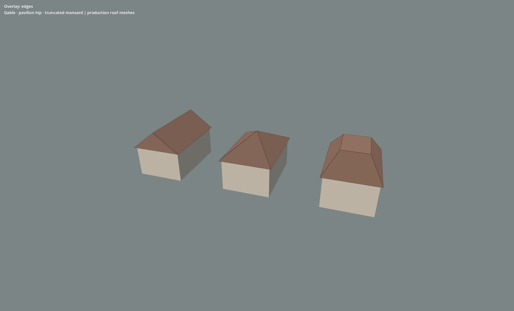

The crease repair draws physical roof edges without triangulation diagonals. Flat face normals replace the rounded shading on hip and mansard primitives. The surface candidate aligns courses to each slope, adds tile variation and softer joints. Roof proportions, ridge construction, gutters and a photographed roofing material remain art work to review.

Plaster, wear and overlay comparison · Capture source hashes